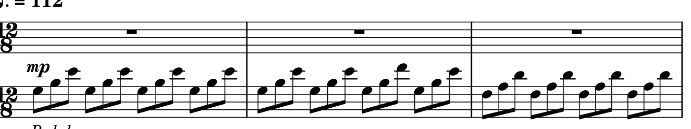
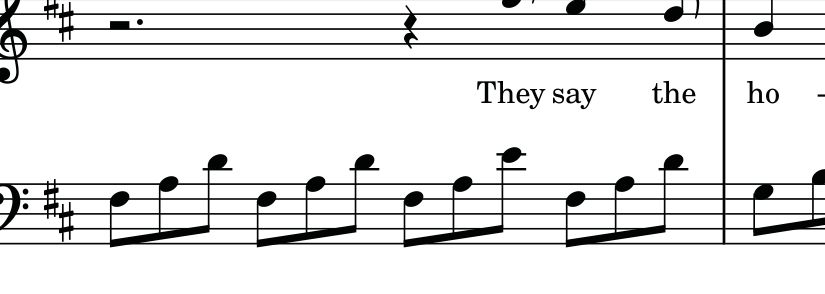

Así suena el compás
Tu piano interactivo
Pulsa cualquier tecla para escucharla. Las notas de este compás están señaladas.
Busca las teclas iluminadas y tócales con calma.
Practiquemos juntos 💜
Activa el reto y pulsa las teclas que te pida el tutorial, en orden.
La teoría, sin vueltas
12/8¿Por qué 12/8?Cuatro pulsos que se subdividen en tres＋
Hay 12 corcheas por compás, organizadas en 4 grupos de 3. Cuenta: UNO-dos-tres, DOS-dos-tres, TRES-dos-tres, CUATRO-dos-tres. Por eso verás cuatro grupitos de tres notas en la mano izquierda.
♯¿Qué son los sostenidos?Fa♯ y Do♯ en la armadura＋
La partitura tiene dos sostenidos en la armadura: Fa♯ y Do♯. Eso significa que, cuando aparezcan esas notas, normalmente se toca la tecla negra inmediatamente a la derecha de Fa o Do. En nuestros ejemplos verás escrito Fa♯ para que sea más fácil.
𝄐¿Qué hace el pedal?Un sonido unido y suave＋
La indicación de pedal aparece desde el comienzo. Si tienes pedal de sustain, úsalo de manera suave para ligar los sonidos, sin dejar que se mezclen demasiado. Primero aprende las notas sin pedal; después añádelo.
mp¿Qué significan mp y el tempo?Volumen medio suave y pulsación＋
mp significa mezzo piano: toca moderadamente suave. El tempo impreso es negra con puntillo = 112. Como cada pulso contiene tres corcheas, la app te deja empezar mucho más lento y subir gradualmente.
📄 Ver el fragmento de la partitura original Referencia opcional
Estos recortes provienen de la página 1 del PDF que compartiste. La app está pensada para aprender también sin leer pentagrama.

